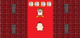
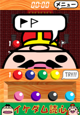

イケダム読心 あそびかた
もくじ
ゲームの目的
ミニダムが四色の玉を並べたよ。
どの色の玉をどの順番で並べたのかを当ててね。
ゲームのあそびかた
- 最初にミニダムが四色の玉を並べるよ。でもどの色の玉をどの順番で並べたかは教えてくれないよ。

- ミニダムがどの色の玉をどの順番で並べたかを予想して、画面下に置いてある玉をドラッグアンドドロップで選んで並べてね。
- これだ！と思う並びが決まったら、TRY!!ボタンを押そう。ミニダムが自分が並べた玉と比べて、結果を教えてくれるよ。
- 色だけが合っている場合には白い旗が立つよ。
- 色も場所も合っている場合には黒い旗が立つよ。

注意！旗の位置は玉の位置と関係しないよ。
- 玉の並びが当てられなかった場合(黒い旗が四本立たなかった場合)は、いままでに試した玉の並びとミニダムが教えてくれた結果から、もう一度玉の並びを考えてみてね。
- 全部の玉の色と場所が当たったら(黒い旗が四本立ったら)、クリアだよ！
当たりと旗の色
玉の色だけがあっている場合
- ミニダムが選んだ玉と同じ色の玉を選んでいるけれども、玉の置いてある場所が違う場合は白い旗が立つよ。
- 例: 1つだけ色があっている場合
- 複数の玉の色があっている(けれど場所が違う)場合、色が合っている玉の数だけ白い旗が立つよ。
- 例: 2つの玉の色があっている場合
玉の色と場所があっている場合
- ミニダムが選んだ玉と同じ色の玉が同じ場所に置いてある場合、黒い旗が立つよ。
- 例: 1つだけ玉の色・場所があっている場合
- 複数の玉の色・場所があっている場合、合っている玉の数だけ黒い旗が立つよ。
- 例: 2つの玉の色・場所があっている場合
両方混ざっている場合
- 色だけあっている玉と、色と場所の両方があっている玉の両方がある場合、白い旗と黒い旗の両方が立つよ。
- 例: 色・場所があっている玉が1つ、色だけあっている玉が1つある場合
- 例: 色・場所があっている玉が2つ、色だけあっている玉が2つある場合
ゲーム中に右上のメニューボタンを押すとメニューが開くよ。
開いたメニューでは次のことができるよ。
- あたらしいゲーム
- ミニダムに新しく玉を並べ直してもらうよ。
-
- タイトルにもどる
- ゲームを中断してタイトルに戻るよ。タイトル画面で「さいかい」を選んだら、いままで遊んだところからまた遊べるよ。
-
- ゲームをさいかい
- メニューを閉じて、続きを遊ぶよ。
-
玉の数の設定
タイトル画面の「せってい」を選ぶと、設定画面で玉の色を4～8までの間で設定できるよ。
玉の数が多いほどミニダムが選んだ玉の色を当てにくくなるので、難易度が上がるよ。
成績
タイトル画面の「せいせき」を選ぶと、いままで遊んだ成績が表示されるよ。
玉の数ごとに、こんなことが記録されるよ。
- 挑戦回数
- 遊んだ回数。一度もTRY!!を押していない回は数えないよ。
- クリア回数
- 玉の色と並びを当ててクリアした回数。
- 勝率
- 挑戦したうちのクリアした割合。
- クリア手数
- クリアまでにTRY!!で玉の並びを試した回数。
- クリア時間
- 最初にTRY!!を押してから、クリアまでにかかった時間。
他の玉の数での成績を見たい時は、左右のボタンを押すか、スワイプするとページがめくれるよ。
キャラクターについて
ミニダム
王様。
イケダム
王様の遊び相手。
イケダム、ミニダムについてもっと知りたい人は、「イケダム係長旅行記」を見にきてね！
© 2011 ikedam.jp